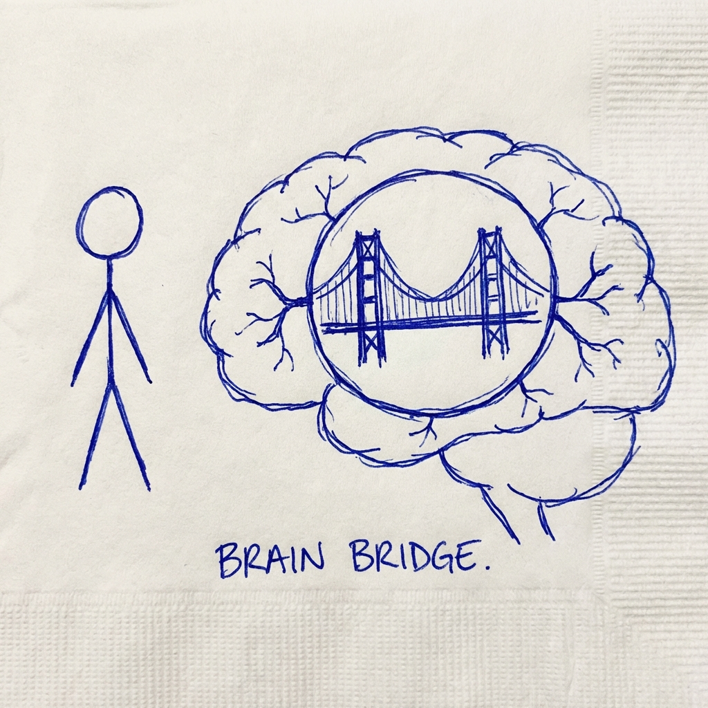
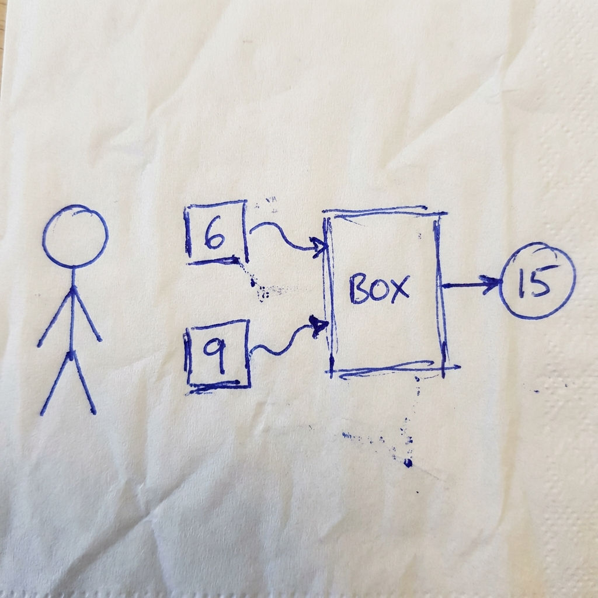

Hãy tưởng tượng bộ não của AI
giống như một thành phố khổng lồ.
Feature = Những "cư dân"
đang sống trong đó.
Thứ cụ thể:
"Tai chó"
Thứ trừu tượng:
"Lãng mạn"
Mỗi feature là một mẫu hình (pattern) mà AI nhận ra trong dữ liệu.
Một nhóm neuron cụ thể sẽ "sáng lên" (fire).
Đó là feature về lập trình!
Các neuron không gọn gàng như chúng ta nghĩ.
1 neuron có thể đại diện cho:
Vừa là "Opera La Mã"
+ Vừa là "Địa chỉ IP" (?)
(Hiện tượng này gọi là Polysemanticity - Đa nghĩa)
Chúng ta dùng thuật toán (Sparse Autoencoders) để tách các neuron "đa nhân cách" này thành...
Hàng triệu khái niệm đơn lẻ.

Trong mô hình của Anthropic, họ tìm thấy một "feature" chỉ quan tâm đến Cầu Cổng Vàng.
- Nhắc đến San Francisco? Sáng!
- Nhắc đến sương mù? Sáng!
- Nhắc đến Tổng thống Mỹ? Tắt.
Điều gì xảy ra nếu chúng ta...
KẸP CHẶT feature này ở mức MAX?
AI có những khái niệm nội tại.
Chúng ta có thể tìm thấy và điều khiển chúng!
Chúng ta còn tìm thấy cả...
THUẬT TOÁN (Algorithms)

(AI tự thiết kế mạch điện này để làm toán!)
Nó đã tự khám phá ra quy luật của phép cộng.
Giống như cách Newton khám phá ra quy luật của trọng lực.
Không Gian & Thời Gian
Llama-3 được tìm thấy có các "tế bào không gian" (place cells) giúp nó hình dung bản đồ thế giới!
Nếu nó có mạch để làm toán, thì liệu nó có mạch để...
NÓI DỐI không?